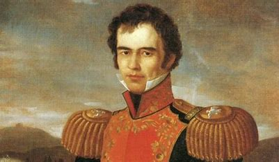

Todos los presidentes de méxico
Todos los presidentes de méxicoPresidentes
Guadalupe victoria (1824-1829)

Vicente Guerrero(1829)
.jpg)
Anastasio bustamante (1830-1832, 1836-1837)
.jpg)
Antonio lópez de santa anna (1833, 1835-1836, 1839, 1841-1842, 1843-1844, 1847)
.jpg)
Valentín Gómez Faríaz (1834, 1846-1847)
vale.jpeg)
Miguel Barragan (1835-1836)
barragan.jpeg)
Nicolás Bravo Rueta (1842-1843)
rueta.jpeg)
Valentín Canalizo (1843-1844)
cenalizo.jpeg)
Manuel de la peña y peña (1847-1848)
peña y peña.jpeg)
José juaquín de Herrera (1848-1851)
joaquin.jpeg)
Mariano Arista (1851-1853)
mariano.jpeg)
Ignacio comonfort (1855-1857)
comonfort.jpeg)
Benito juárez garcia (1858-1872)
.jpg)
Sebastián Lerdo de Tejada(1872-1876)

Porfirio díaz (1876-1880, 1884-1911)
.jpg)
Francisco I. Madero (1911-1913)
.jpg)
Venustiano Carranza (1914-1920)
.jpg)
Álvaro Obregón (1920-1924)
.jpg)
Plutarco Elíaz Calles (1924-1928)
.jpg)
Emiliano Portes Gil (1928-1930)
portes.jpeg)
Pacual Ortiz Rubio (1930-1932)
pascualortiz.jpeg)
Abelardo L. Rodríguez (1932-1934)
abelardo.jpeg)
Lázaro Cárdenas del Río (1934-1940)
.jpg)
Manuel Ávila Camacho (1940-1946)
manuel.jpeg)
Miguel Alemán valdés (1946-1952)
.jpg)
Adolfo Ruíz Cortines (1952-1958)
adolfo cortines.jpeg)
Aldolfo López Mateos (1958-1964)
.jpg)
Guztavo Diaz Ordaz (1964-1970)
.jpg)
Luis Echeverría Álvarez (1970-1976)
.jpg)
José López Portillo y Pacheco (1976-1982)
.jpg)
Miguel de la Madrid Hurtado (1982-1988)
.jpg)
Carlos salinas de gortari (1988-1994)
.jpg)
Ernesto Zedillo Ponce de León (1994-2000)
Vicente Fox Quesada (2000-2006)
.jpg)
Felipe Calderón Hinojosa (2006-2012)
.jpg)
Enrique Peña Nieto (2012-2018)
.jpg)
Andrés Manuel López Obrador (2018-presidente)
.jpg)